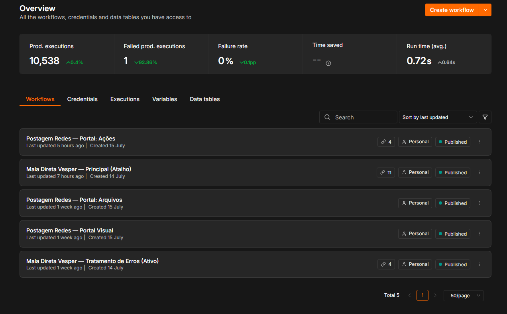

Context and problem
Spreadsheets, manual address copying and scattered signatures made it difficult to know who received a message, what failed and whether a cancelled campaign had actually stopped.
CASE / MALA-DIRETA
IN PRODUCTIONProduction n8n automation
Internal email campaign product with a web dashboard, recipient-level queue, validation, deduplication, revalidated cancellation, SMTP, history and auditing.

Spreadsheets, manual address copying and scattered signatures made it difficult to know who received a message, what failed and whether a cancelled campaign had actually stopped.
Process mapping, architecture, operational UX, workflows, data migration, deployment, testing, documentation and support.
Dashboard served by n8n webhooks, 9 Data Tables, separate campaign and recipient records, safe loop, SMTP, auditable events and a dedicated error workflow.
Declared limitations
The public release is inactive and contains no credentials, recipients or real campaigns.
How I would evolve it at larger scale
I would split delivery into dedicated workers, adopt a managed queue/broker, centralized metrics, provider delivery feedback and formal retention and suppression policies.
Public evidence contains no credentials, personal data or sensitive internal information.